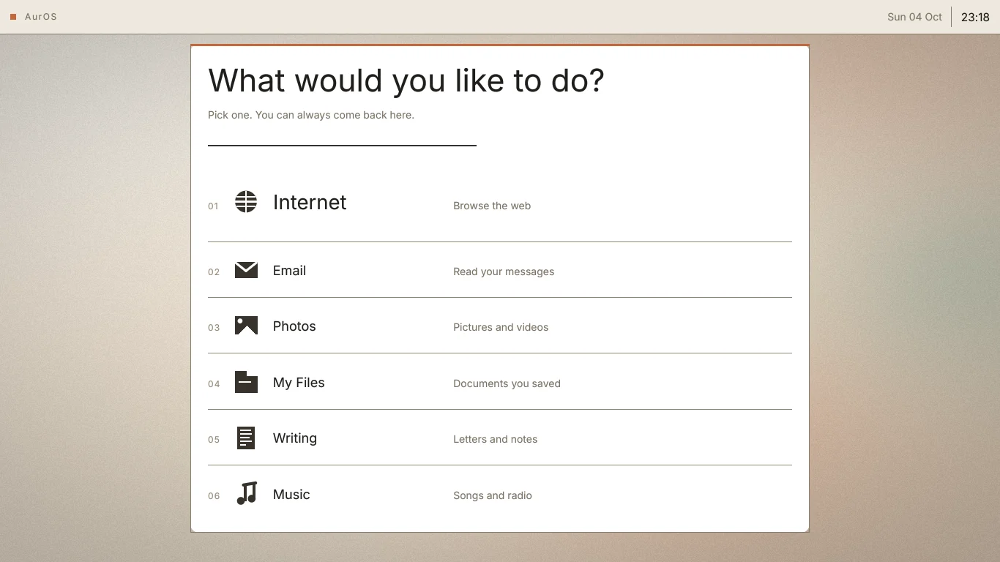
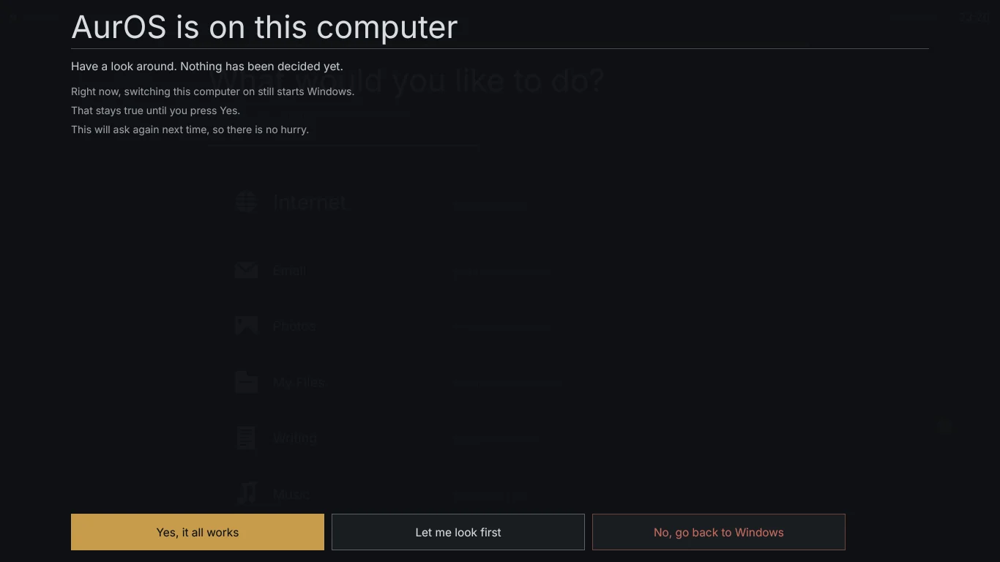
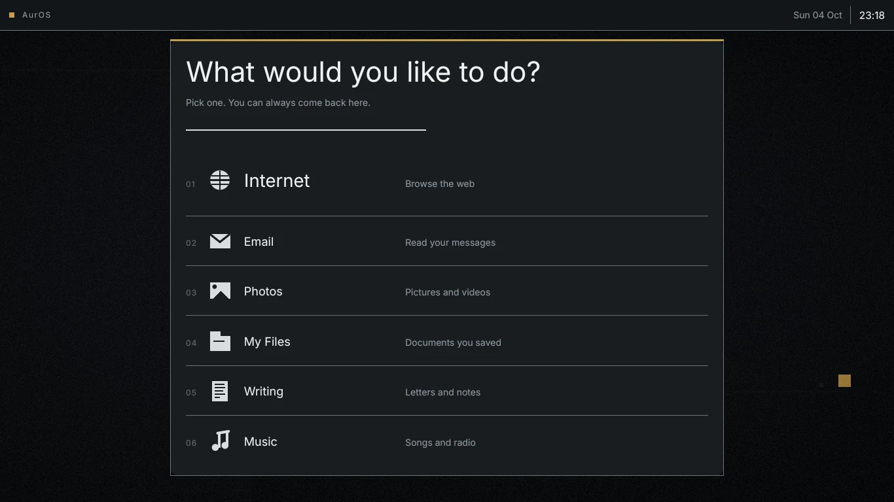

Your old PC isn’t finished.
Download one file. It restarts once and comes back as a fast, patched desktop, with your files already on it. Until you say it works, Windows is still there.
Pre-release test build. What can go wrong

02 One restart
It restarts once.
This is the screen it shows while it works, rebuilt from src/aurscreen, saying what the installer says.

03 The way back
Put Windows back.
Until you press Yes, it all works, Windows is still on the drive and still starts. One button puts it back exactly as it was. We cut the power on purpose to prove it.
The power was cut at 18 named instants: 13 while installing, 5 while putting Windows back. 138 checks. 0 failed.
Every cut is followed by the same question: are the 7 files in Windows exactly what they were, and does Windows come back? sudo sh tools/powercuttest.sh · transcript: docs/results/powercut.txt. Simulated machine (QEMU + OVMF); one firmware, one virtual disk.
the machine stops dead at shrink-end ok
after the cut: every file in Windows is still exactly what it was ok
and Windows can be put back ok
after shrink-end: the table is valid again ok
after shrink-end: the three original partitions are back ok
after shrink-end: Windows is its full size again ok
after shrink-end: the EFI partition is byte-for-byte what it was ok
after shrink-end: the Windows FILESYSTEM is its full size again ok
after shrink-end: and the installer says so itself ok
Before, and after putting it back
The test’s own Windows: six 64 KiB pictures and a 2 MiB thesis.odt of random bytes (tools/machine.sh). Re-enacted in your browser with fresh random bytes; the test does it with md5sum on a real NTFS volume.
before anything is touched
waiting to be computed in your browser
after Put Windows back
waiting to be computed in your browser
- Users/auros/Pictures/p1.jpg
- Users/auros/Pictures/p2.jpg
- Users/auros/Pictures/p3.jpg
- Users/auros/Pictures/p4.jpg
- Users/auros/Pictures/p5.jpg
- Users/auros/Pictures/p6.jpg
- Users/auros/thesis.odt
04 The desktop
Six looks. Six ways to work.
Every picture here is drawn by the desktop’s own code at 1366 × 768, the screen most of these laptops have. Nothing is mocked up. Click around it in your browser.
Looks
Layouts

05 Schools & nonprofits
One recipe. Every machine.
Your cupboard of laptops, built from one short file: only the programs you asked for, in your language, locked down as far as you want. Ubuntu’s security updates install themselves, the kernel and boot chain included.
Most computers are sold by what they add. This shows you what it takes out.
- Schools & nonprofits
- $15 per device per year, 25-device minimum
- One machine
- $79, once
Prices as set in lathe/docs/SPEC.md. Nothing is on sale yet: AurOS is pre-release.
schema: 1 name: example-school policy: managed
On these machines –
Taken out –
Validated and compiled in your browser by recipes/lib/recipe.mjs, the same code that turns a recipe into the profile build/forge builds.
Pre-release. Tested on simulated machines and on real Windows in CI. Real PCs installed so far: 0. What can go wrong, and what doesn’t come across